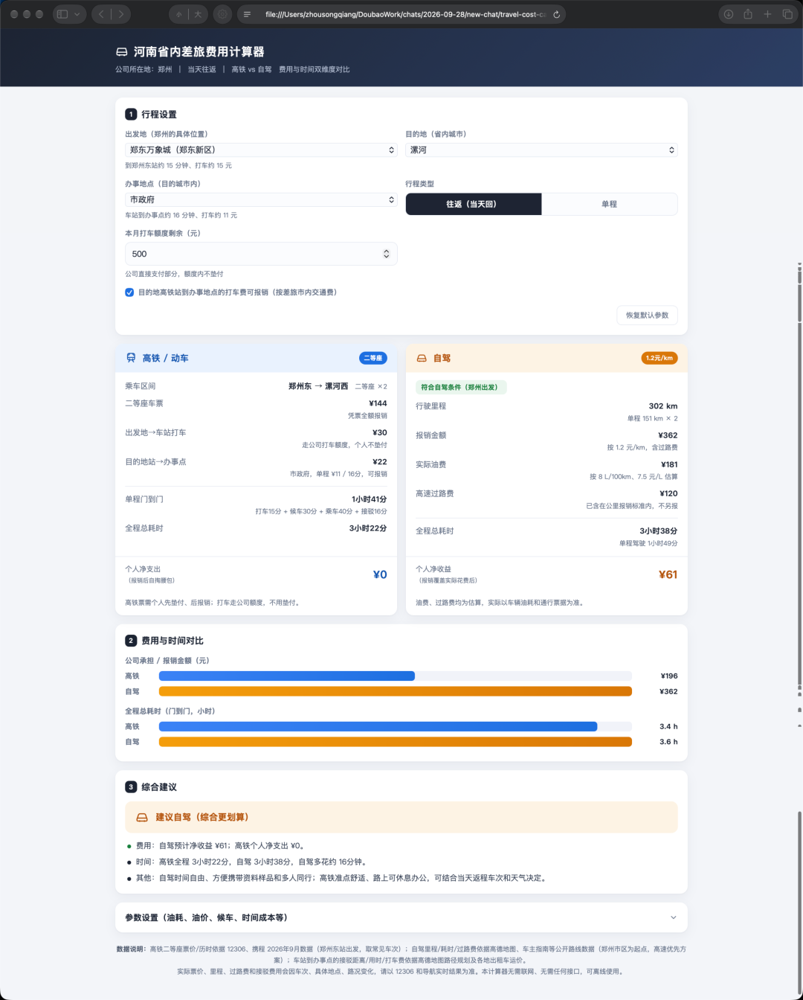
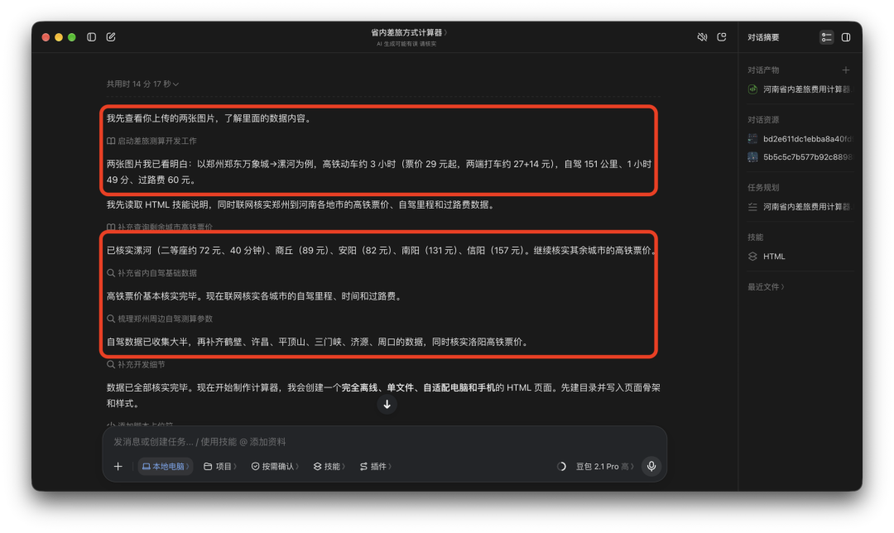
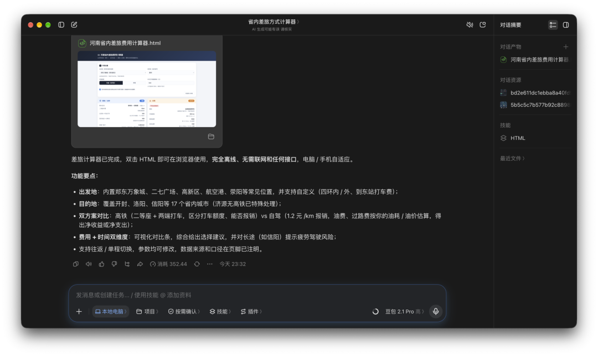
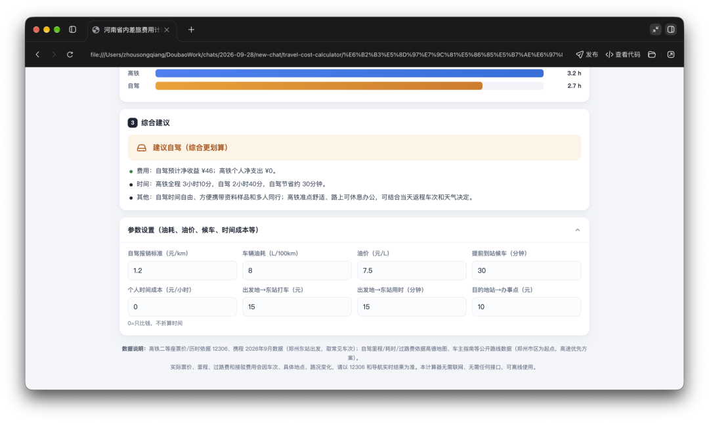
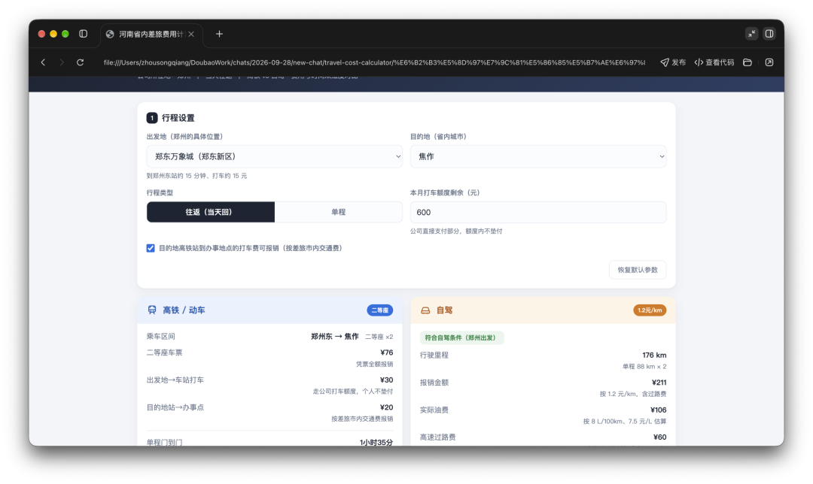
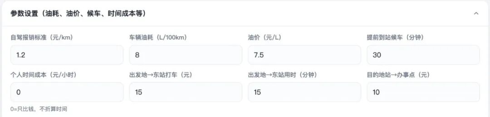
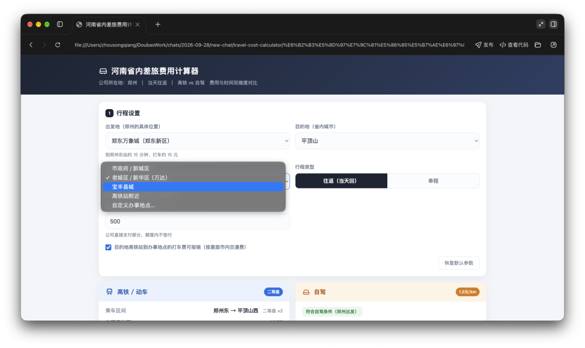

你好，我是平野先生。
工作性质的原因，我需要经常在省内出差，很长时间以来都在为出差报销的事情头疼。
公司允许自己选择高铁或者自驾出差，但差旅报销审核非常严格。因为这个，每次出差之前都要12306、地图、打车软件来回对比，计算哪个更省钱，哪个又更省时间。
前两天无意间刷到有人用AI做了个「拼假计算器」，还挺有意思。
于是，熬了一个大夜，做出来一款「差旅计算器」，只需要动两下手指，5秒钟帮你决策是坐高铁还是自驾。
（项目源代码仓库我会放在文章末尾，感兴趣的自取。）

用「豆包工作」直接开跑
这次用的「豆包工作」，正好赶上加赠30天会员体验，模型选了doubao-seed-2.1-pro。发给它两张高德地图的手机截图，提示词如下，直接开工。
背景：我的工作性质需要经常在省内出差，基本都是当天去当天回，有两种差旅方式可以选择：高铁或者自驾，两种方式公司都给报销。其中高铁只能报销二等座，自驾按照每公里1.2元标准报销油费，如果需要走高速，高速过路费包含在邮费报销标准之内。但自驾出差有要求，即在公司所在地城市四环外才可以申请自驾，四环及四环以内只能打车，公司每个月给的有固定打车额度，公司直接支付，不用个人垫付，也就不走报销。我需要你根据这个背景制作一个到省内除公司所在地之外城市出差的差旅费用计算器，输入/选择出发地、目的地计算对比高铁、自驾费用以及时间成本对比，根据两项成本对比综合给出差旅方式选择建议。这个差旅计算器支持在电脑端和手机端使用，联网不是必需条件，不需要接入大模型API也可以使用。
除了提示词，还附带了两张手机高德地图查郑州到漯河高铁、自驾的时间、费用对比截图，拿到提示词和截图以后，「豆包工作」优先去读了图片包含的信息，加上提示词的任务背景和需求说明，分批次挨个查询、核实郑州到河南另外17个地级市的高铁二等座票价、行程时间，和自驾里程。所有基础信息收集完毕之后，才动手开始做html单文件计算器。
数据说明：高铁二等座票价/历时依据 12306、携程 2026年9月数据（郑州东站出发，取常见车次）；自驾里程/耗时/过路费依据高德地图、车主指南等公开路线数据（郑州市区为起点，高速优先方案）；车站到办事点的接驳距离/用时/打车费依据高德地图路径规划及各地出租车运价。
实际票价、里程、过路费和接驳费用会因车次、具体地点、路况变化，请以 12306 和导航实时结果为准。

还挺靠谱。
14分17秒，第一版交付
跑了14分17秒，效率也还不错。交出一份html格式的「差旅计算器」，附带简单的使用说明。

上手用基本满足我提的要求，连提示词里没有提到的车辆油耗、加油的油价、平均每小时工作时间的金钱成本也都考虑进去了，这一点多多少少有点超预期。（油费、过路费均为估算，实际以车辆油耗和通行票据为准）

三版迭代，修到能用
美中不足的是，提示词中明确要求的支持在手机端使用，但在手机上打开却发现，内置的出发地、目的地备选项没有带过来，计算器功能基础丢了，整个功能全部失效。
bug连同第一版遗漏掉的点：跨城出差选择自驾不限制四环外出发，两个一起修。提示词：
1. 跨城出差选择自驾的不限制出发地是否在四环外，只要出发地是郑州即可。
2. 这个html文件在手机上打开后所有的内置信息，需要修复。
很快两个问题就修好了，手机端也能正常使用功能了。

但是，我又发现一个关键错误：前两版参数设置里面，目的地城市车站和办事地点之间打车的费用需要自己估算，如果不想估算填成固定数值，实际情况是打车路线、车费、时间不可能固定不变。

那就继续修，增加一个输入目的地城市办事地点的选项，计算器自动计算打车费用、时间，纳入综合对比。提示词：
继续完善功能： 由于目的地城市车站到办事地距离不固定，打车费不能按照统一标准计算，需要增加一项办事地点输入，用于计算目的地城市车站到办事地点之间的打车费用、往返时间。
这一版，「豆包工作」没有如我想象那样把办事地点输入框做成手动输入，而是给每个目的地城市做了4个主要商圈的下拉备选项，虽然还不够精确，已经差不多够用了。

| 版本 | 耗时 | 问题 | 怎么修 |
|---|---|---|---|
| 第1版 | 14分17秒 | 手机端打开后内置备选项丢失、功能全失效；跨城自驾没限制在四环外 | 两条提示词一起发，一并修 |
| 第2版 | 4分48秒 | 车站到办事点的打车费要自己估，估不准 | 增加办事地点输入，自动算打车费与往返时间 |
| 第3版 | 11分43秒 | 没做成手动输入，改成每城 4 个主要商圈下拉 | 精度差一点，够用，收工 |
至此，一款足够我自己平时出差，用来帮我快速计算选择差旅方式的「差旅计算器」就做好了。
html格式单文件，快速选择目的地城市和办事地点，5秒钟就可以做出决策，不用再像之前那样，每次都要计算器算半天。
在线版和源码仓库
但是，事情到这里还没结束。
如果这个计算器能让更多像我一样需要经常出差报销的兄弟姐妹都用上，出发地不只局限在郑州，差旅范围不止局限在河南一个省，帮助更多人节省做决策的时间，让更多公司企业有效控制差旅成本，这个小小的「差旅计算器」才能发挥出更大价值。
在线版复制到浏览器点开即用：
https://johnchow90.github.io/travel-cost-calculator/
源码仓库：
https://github.com/JohnChow90/travel-cost-calculator
个人免费自取；企业或商用需授权，找我就行。
我是平野先生，一个喜欢利用AI帮自己提效的职场中登。关注我，分享更多真实使用体验和踩坑经验。